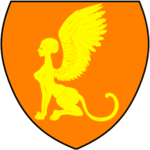
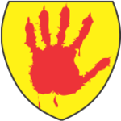
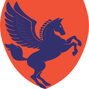
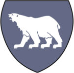

35 The Twelve Realms

Dunador
Description
Dunador is a strong kingdom with an impressive army and navy. The land is made up of mostly plains and farmland, and is bordered to the East by the mighty Anduin. It is a place of adventure, a land of heroes, and a bastion of good in a world of dark threats.
People
The population numbers about 300,000, of which 85% are human. Of the remaining people, 2% are high elves (from Imraldris), 3% are halflings (from Runneymede), and 10% are dwarves (from Hammerfast). Common is the predominant language.
Religion
The favored deity is Gaoth, god of wind, thunder, and storms, slayer of monsters. The demi-god Gilgamesh, demi-god of strength, is also worshipped.
Government
- Halfred of Dunthrane is King of Dunador.
- Lord Edrin (Halfred’s brother) rules Ravencrest.
- Duke Aimar rules Andevar.
- Duke Arond (The Queen’s nephew) rules Ithil Province.
Heraldry
The coat of arms is a gold rampant lion cross on a sky blue field.
Climate
Dunador has a temperate climate.
Cities
- Dunthrane, the capital city of Dunador
- Tol Kain
- Ravencrest
- Montinelle
- Minas Ithil
- Fort Aggro
Villages
- Outervalley Well
- Stone Martin
- Dale
- Runneymede
Empire of Ix
Description
To the North West is the terrible Empire of Ix. Dedicated to self-serving evil and pursuit of power, Ixalor’s armies occupy even his own land as if it were a hostile country needing to be conquered. Refugees speak of a road of skulls leading to the capital city, and watchtowers along the road with beacons fed on the fuel of human fat and flesh.
Ixalor does not hesitate to prey on the weak and has made several attempts to conquer surrounding realms. His empire currently encompasses the Land of Ixalor, the Horned Lands, the Bandit Lands, and the Barren Lands. Few beings have a greater capacity for cruelty than the demigod Ixalor. Ixalor harbors an undisguised desire to dominate all of the OnceWas like the overking he once served.
Ixalor is the son of the witch Isoma Ixal. Zagyg and the Circle of Eight banished and imprisoned Ixalor 200 years ago. Though Ixalor is physically absent, he still holds all power.
Of late, his influence has been inconsistent. Ixalor’s servants have more control over some regions of the empire than others. Ixalor’s clerics inflict cruelty and torture upon all who oppose them. Ixalor tolerates no less than fanaticism and complete obedience. His clerics constantly try to outdo each other in their acts of cruelty and evil. They show their superiority over all other beings by hunting for trophies; rare finds such as unicorns or paladins are truly prized.
The clerics create spells and magic items of terrible power and evil nature and travel the world to commit acts of evil and search out Ixalor’s enemies. Ixalor is served directly by the Boneheart – two tiers (Greater and Lesser) of six advisers each (clerics and wizards), and by the Boneshadow, six spies and evildoers who roam the world. Ixalor builds grand temples to himself in his nation-state, but his churches elsewhere are small and secret. He maintains important sites for mass rituals, sacrifices, and other ill deeds in forbidding wilderness terrain far from the eyes of good.
With Ixalor’s disappearance, some of his more opportunistic followers and a few of his fiends broke away to form the Horned Society.
“The weak must be exploited, tortured, and stripped of hope. The strong must be constantly wary of betrayal by their underlings. Pain is power, and inflicting pain demonstrates power best. Crush those beneath you. Ixalor must be obeyed, and those who defy him will know absolute pain.”
People
The population numbers about 150,000, of which 55% are human. Of the remaining people, 30% are orc or half-orc, 10% are hobgoblin, and the remaining 5% are demonic. Another estimated 10,000 consist of the undead. Common is the predominant language, but Orcish and Demonic are also spoken.
Religion
For a long time, the only deity worshipped was Ixalor himself. Note: The priests of Ixalor were able to cast spells again about 10 years after Ixalor’s banishment. Recently, cults of Grund-Wyrgen and Nergal have quietly emerged.
Government
The Empire of Ix is technically an imperial theocratic dictatorship with demigod Ixalor recognized as the supreme ruler. Ixalor’s priesthood and War Lords manage the affairs of the empire in his name.
- The mad Baron Numenor “rules” Greenreach.
- Baron Dorag the Boneshadow is regent in Fleichshriver.
- Lord Baltab the Immortal Orc governs Barad Perras in Narragor.
The Bandit Lands are loosely allied petty dictatorships, currently “administered” by occupying forces of Ixalor. They are usually warlords and mages supposedly in service to Ixalor.
The Horned Lands are an area of the Horns of the Dragon made up of Hobgoblins, Goblins, Bugbears, and Ogres. It is ruled by Lord Azarr Kul, Hobgoblin cleric of the cult of Xalara.
Heraldry
The coat of arms features a grinning skull on a black field.
Climate
Ixalor has a cold bleak climate with a great deal of snow and freezing rain. The sun never shines above Dorakaa which is always gloomy and overcast.
Cities
- Dorakaa, the capital city of the Empire of Ix
- Fleichshriver
- Greensreach
- Stoink
- Rookroost
Other Regions
- Barren Lands
- Horned Lands
- Bandit Lands
Glantri
Description
Glantri is a country ruled by a council of independent princes, each a powerful magic-user. It is a place of wonder, beauty, and danger.
Once and always, the spirit of Glantri is linked with its magic. More than any other force, spellcraft has given every facet of this land a distinctly Glantrian hue. Powerful spells have left their mark on the realm’s geography. The pursuit of power through magic has dictated the direction of local history - just as it has molded the shape of Glantri today.
The capital city has a canal system and is home to the Glantri City School of Magic.
People
The population numbers about 300,000, of which 70% are human. Of the remaining people, 15% are elves or half-elves, 5% are halflings, 5% are gnomes, and the remaining 5% are other races. Additionally, it is estimated that there are over 20,000 lycanthropes living in Glantri.
The predominant languages are Common and Arcane. Elven and Ancient are also spoken.
Religion
The favored deity is Curumo, god of knowledge, with St. Cuthbert, the demi-god of wisdom, dedication, and zeal, as a demigod.
Government
Glantri is ruled by a council of princes, each a powerful wizard. The current princes of Glantri are:
- Balakarde the Venerable
- Keoghtom the Alchemist
- Nystul the Illusionist
- Leomund the Conjurer
- Mortekai the Black
- Otto the Enchanter
- Alhamazad the Wise
Heraldry
The coat of arms features a yellow sphinx on an orange field.

Hammerfast
Six have sat on the carven throne and ruled Hammerfast’s pillared halls of stone where hammer on the anvil rings and ale horns raised to dwarven kings!
Description
South of Dunador, below the Lagithil river, lies Hammerfast, the Dwarvish Stronghold. Hammerfast is also the name of the massive mountains that contain the city-state of the dwarves.
Krimhold Battlehammer, the Dwarven King, has a great stronghold built on the highest summit. Its defenses have never been breached. Within the Dwarven King’s hold is the Great Dwarven Hall, a giant room with massive pillars where the dwarven king holds his audience. A giant stalactite lies in the center of the room and reaches nearly to the ceiling, hundreds of feet above. The stalactite has been hollowed out and used as Krimhold Battlehammer’s throne.
Beneath the Dwarven King’s hold are iron mines and giant caverns that dig deep into the mountain. The ore is transported to the port cities of Hel Gurihm and Nonlodar. The dwarves do not sail, so iron merchants from all of the surrounding Kingdoms travel to these ports.
People
The population numbers about 50,000, of which 98% are Dwarves. The remaining 2% are Gnomes.
Dwarven (Underspeak) is the predominant language. Common is also spoken.
Religion
The favored deity is Dobhainn, god of hard work and of the earth, with Hanseath, the demi-god of war and beer, as a demigod.
Government
Krimhold Battlehammer, the Dwarven King, rules Hammerfast.
Heraldry
The coat of arms features a gold crown on a brown field.
Climate
The climate is mostly temperate, although much cooler at the snow-covered mountaintops.
Cities
- Hammerfast Dwarvish Stronghold
- The port city of Hel Gurihm
- The Mines of Thortihrm
- The port city of Nonlodar
Imladris
Description
Imladris is a breathtakingly beautiful high elven city deep in the heart of the dense Luisian Forest. Lady Galadriel is the Elven Queen of Imladris, and she is the mightiest and fairest of all the Elves that remain in OnceWas. Hers is an enchanted, enriched land—a great magic forest into which evil cannot enter without difficulty. It is filled with thundering waterfalls, secluded valleys, colorful alpine meadows, and majestic mountains. Residents are almost exclusively elves, with high elves making up nearly 90% of the population, wood elves 5%, and moon elves 5%.
The Elvish Kingdom is protected by thick natural growth, nurtured to create an impenetrable hedge of thickets and brambles stretching out for almost a mile in every direction from the city. It contains an intricate network of secret passages and paths, both within the thicket below and in the branches above, combined with creepers, vines, and lianas that allow the city’s protectors, mostly bladesingers and deft archers, to patrol the city’s perimeter. If confronted by one of these protectors, it is likely that as many as 25 others are hidden and ready to aid their associate.
The elves create great works of art, music, and magic, but tend to keep their works within their own community, passing them between each other as gifts. There is no shame in “regifting”; in fact, quite the opposite. Some treasures have accrued a “pedigree” of sorts based on who has given the item to whom in the past—a practice that usually increases its value rather than diminishing it.
The Luisian Forest provides everything they need to survive, so they trade with others only very rarely, and only with other elves. As a result, most trade with Imladris flows through Ellesméra.
Given the longevity of elves, the high elves have guided the growth of the great trees over the eons. As you pass through the woods to the great river Harp, you see across the water immense trees actually bent into graceful arches, crisscrossed by wooden bridges, with high gleaming windows in the trunks illuminating the rooms within.
An immense temple at the center is formed of the trunks of three massive trees twisted together into a great braid, with the branches arching out over the nearest buildings like buttresses. Cypress or mangrove-like trees stretch out over the water, making a living complex of docks.
The temple is dedicated to Ki. Within the temple, there are shrines to other deities and spirits that Ki considers to be allies. The city leaders are both well-practiced in the art of magic as well as high priests.
The shining city is filled with light. Beautiful Elven music fills the air. The white stone buildings, rails, and structures are laced with elegant twisting branches and leaves. Abundant parks and gardens fill the city, reflecting the Elves’ appreciation of the natural world and its beauty.
People
The population of Imladris numbers about 4,000, of which almost 90% are High Elves, with wood elves (5%) and moon elves (5%) making up the difference.
Elven (Sylvan) is the predominant language. Common is spoken as well.
Religion
The favored deity is Ki, goddess of life and nature.
Government
Lady Galadriel is the Elven Queen of Imladris.
Heraldry
The coat of arms features a white tree on a green field.
Climate
Imladris has a temperate climate.
Cities
- Imladris, the capital city of the Elvish Kingdom
- Ellesméra, an Elven and Human village and a place where many half-elves live
Isigir
Description
Far to the southeast is the seafaring nation of Isigir. After the downfall of the Great Kingdom, the followers of Isig further descended into evil, taking to pillaging and piracy along the coasts of the North and West. A massive navy was built up, and Isigir remains the most powerful fleet in the twelve realms. Today, Isigir is an important trading nation but is also known to encourage piracy. It frequently hinders trade between Dunador, Keoland, and Nyrond. Isigir is the hated enemy of Dunador and a welcome refuge for its enemies.
People
The population numbers about 300,000, of which 83% are human. Of the remaining people, 2% are wild elves, 3% are halflings, 11% are dwarves (living in the Iron Hills), and the remaining 1% are other races. Common is the predominant language.
Religion
The favored deity is Enki, god of water, the oceans, and rivers. The demi-goddess Uinen, demi-goddess of merchants, is also worshipped.
Government
Isigir is currently ruled by King Castimir the Usurper in Umbar. Castimir is the first King not of Isig’s lineage. Beneath him are nine Sea Lords, the Council of Captains, each in command of one of the nine other cities on the coast of Isigir. Isigir has a powerful navy that frequently hinders trade between Dunador, Keoland, and Nyrond.
- Castimir the Usurper was not of the Isig bloodline nor a direct heir to the throne of Isigir. He was a noble of the realm and became the Captain of Ships.
- Even before Eldacar’s ascension, rebellion brewed in Isigir, especially in the southern part where piracy flourished.
- King Eldacar maintained a difficult and unpopular truce with Dunador. Years of religious and political differences added additional strain. The Sea Lords saw Dunador as a competitor in trade and expansion in the ‘New World’ of the OnceWas.
- With the support of the nine Sea Lords, Castimir murdered King Eldacar of the House of Isig and claimed the throne in 635 A0M.
- Immediately, King Castimir attacked Dunador and the War of Belmont Bay began.
Heraldry
The coat of arms features an orange dragon on a blue field.
Climate
Isigir has a tropical climate. There is a rainy season during the start of the summer when violent thunderstorms are prevalent.
Cities
- Umbar, the capital city of Isigir
- Osgiliath
- Hardby
- Dragonhall
- Whisper Bay
- Riddle Port
- Iron Gate
- Onwall
- Red Sand Cove
- Pirate Isles
Keoland
Description
Keoland is a monarchy and one of the oldest political states. Great knights defend the kingdom from the Sunndi to the north, the Pomarj to the east, and the Lizard men to the south.
In the heartland, grains and other foodstuffs are harvested and processed to help feed the land. To the west, in the Good Hills, gems and ores flow into the cities of Cryllor and Seawell and then all across the Oncewas. To the north, on the Sheldomar, ships and barges carry Keoish products to all shores and bring back rare and exotic goods from across the continent. All of these industries and more help make Keoland the “Gem of the Oncewas”.
Keoland has been in a religious war with Sunndi for over 300 years. The war is known as The War of the Sun and the Moon.
People
The population numbers about 250,000, of which 84% are human. Of the remaining people, 8% are dwarves (living in the Good Hills), 5% are elves, and 3% are halflings. Common is the predominant language.
Religion
The favored deity is Anu, god of the sun, heavens, and sky, with Utu as a demigod.
Government
Her Majesty, Queen Kimbertos Skotti, is the Grand Monarch of Keoland.
Heraldry
The coat of arms features a rampant yellow stag on a purple field.
Climate
Keoland has a mostly temperate climate with mild winters and hot summers.
Cities
- Niole Dra: The capital city of Keoland
- Seawell
- Ulek
- Feanor’s Landing
- Long Spear
- Fort Aggro
- Vale of Empedocles
- The Isle of Keo
Narragor
Description
Narragor is a terrible land of darkness and fear, inhabited by orcs and other evil creatures. High jagged mountain ranges form a nearly impenetrable barrier. It is a barren wasteland, riddled with fire, ash, and dust.
People
The population numbers about 400,000, of which 72% are Orc. Of the remaining creatures, 25% are Humanoid - Hobgoblin and Goblin, Ogre, Bugbear, Gnoll, etc. 3% are Human. Orcish is the predominant language. Common is also spoken.
Religion
The favored deity is Grund-Wyren, mother of monsters, with Lolth, the demon queen of spiders, as a demigod.
Government
For hundreds of years, the realm has had no leader. The varied tribes are a quarrelsome rabble but are numerous and dangerous. Recently, the orcish clans have been more organized and have been uniting under a common banner.
- Baltab the Immortal Orc, Lord of Barrad Perras
- Lord Madkin, Governor of Melkot
- Queen Berúthiel, Lordess of Spine Castle
- General Murok, the spear of Gruumsh
- High Priest Ho
Heraldry
The common banner features a red hand on a yellow field.

Climate
Volcanic activity makes the climate hot and dry. The weather is extremely unfriendly and the air is toxic and hard to breathe.
Cities
- Melkot, city of the Bone March
- Haigrog (Orc-haven)
Nyrond
Description
The Kingdom of Nyrond, birthed by the illustrious King Nyr, scion of the legendary Overking Lord Feal, once stood as a bastion of prosperity amid abundant natural riches. Today, however, Nyrond is a realm rent asunder, its lands scarred by the aftermath of bloody conflicts against the Empire of Ix and the lawless Bandit Lands. The toll is grim: nearly 60,000 lives lost in battle, with twice that number fleeing in desperation, seeking refuge and livelihoods beyond its borders.
Amidst the fractured realm, morale falters among nobles, soldiers, and the commonfolk alike. Hunger grips the populace, pushing some regions to the brink of starvation, while the kingdom’s once brimming coffers now echo hollowly. Taxation, necessary to fend off the looming threat of Ixalor to the north, has become a crushing burden, stoking rebellious flames among peasants and urban dwellers alike. Streets once vibrant with commerce now teem with destitute souls, their neighborhoods overrun by beggars and urchins, symbols of a kingdom in decline.
In the heart of this turmoil lies Nyr’s Gate, where authorities pluck bodies from the ocean, grim testimony to the treacherous currents that run beneath the surface of the kingdom. Refugees huddle in impoverished districts, while trade, once the lifeblood of Nyrond, withers under the weight of uncertainty and strife.
Internally, the vital silver mines of the Flinty Hills stand as a beacon of hope, their bounty, alongside aid from allies such as Keoland, serving as the sole bulwark against Nyrond’s collapse. Yet even here, tensions simmer; the dwarves of Dwarvengarde, nestled deep beneath the Dunatis Mountains, tread cautiously. Led by the wise DwarfLord Kelfex Grommet, these stalwart miners maintain a wary vigilance against potential foes, their autonomy fiercely guarded amidst whispers of political intrigue and distant conflicts.
Beyond the mountains, within the Plains of the Old Dominion, ancient nomadic tribes of wild elves ride their majestic giant owls, remnants of a time before the Overking’s conquest reshaped the land. Distrust lingers between these elusive tribes and the dwarven enclaves, a fragile balance maintained through cautious diplomacy.
In the face of adversity, Nyrond’s coat of arms—a resplendent blue Pegasus soaring against a backdrop of blazing orange—remains a symbol of resilience, a reminder of past glories and the indomitable spirit that yet flickers in the kingdom’s depths. Amidst its temperate climes and storied cities like Rel Mord and High Vale, Nyrond stands at a crossroads, where the echoes of history mingle with the uncertainty of its future—a realm where every dawn brings both promise and peril, and where the fate of thousands hangs in the balance.
People
The population numbers about 200,000, of which 89% are human. Of the remaining people, 4% are wood elves from the Celadon Forest, 6% are dwarves (living in the Dunatis Mountains), and the remaining 1% are other races. Common is the predominant language.
Religion
The favored deity is Brigit, goddess of fire. The demi-god Girru, demi-god of volcanoes and fire, is also worshipped.
Government
- Lynwerd of Aerdi and the house of Nyr is King of Nyrond.
Heraldry
The coat of arms features a blue Pegasus on an orange field.

Climate
Nyrond has a temperate climate.
Cities
- Rel Mord, the capital city of Nyrond
- Durheim
- Oerik
- Nyr’s Gate
- Port of Karereca
- Brindol
- HighVale
- Tellerton
- Drellin’s Ferry
Pomarj
Description
Once this area was a Keolandish penal colony. It was called the Poor March then and it was a hostile land filled with orcs and ogres. The orc, Turrosh Mak, led a revolt against the Keolandish governor and his men, and Turrosh Mak reclaimed the land, renaming it the Pomarj as it is known today.
The Pomarj is a large peninsula located to the south. It was well known to be overrun by humanoid tribes and considered by most to be a wretched hive of scum and villainy.
However, of all of the OnceWas, the Pomarj is the most open melting pot of races in the Realm. There are still some dwarven miners living in villages along with orcs, goblins, and humans. A thriving black market run by human pirates has been the backbone of the Pomarj economy. While most consider this to be a place of outlaws, there are many who recognize that this is the only place in the OnceWas where human and demi-humans live together successfully.
A tavern in High Port called the Temple is legendary. All are welcome there.
Turrosh Mak is able to pass if disguised as an ugly human. When addressing his orcish followers, he also disguises himself and wears orcish war regalia in order to look more like one of them. He is tall and strong-bodied, but is starting to go gray at his temples. He is an intelligent and ruthless warrior, a survivor who will use any dirty trick at his disposal to stay alive.
Turrosh Mak is a founding member of the Slave Lords and is still closely allied with their present incarnation. He has pledged himself to Grund-Wyren in return for power and is thus allied with that god’s cult.
Turrosh Mak was formerly known as Theg Narlot. In 569 CY he joined a secret brotherhood assembled by Stalman Klim named the Nine. Later it would be renamed the Slave Lords. In 574 CY, the Nine assassinated King Rodric of Suderham; as the group’s assassin, presumably Theg Narlot executed the man himself. Within a matter of hours, the Nine had taken over the city. For four years, the Slave Lords kidnapped and sold slaves all around the Sea of Gearnat. In 580 CY, a band of adventurers attempted to defeat the Slave Lords. The city of Suderham from which they ruled was destroyed by the eruption of Mount Flamenblut. Theg Narlot disappeared into the Pomarj, but reemerged in the early 580s as Turrosh Mak, who used a combination of judicious assassinations and brute military force to unite the humanoid tribes of the region and forge them into a kingdom.
In Readying of 584 CY, Despot Mak sent his troops to conquer the southern Wild Coast and the eastern Principality of Ulek.
Turrosh Mak, blood of Krugur Mak, great reaver and bane to civil kind, chief of the Fire Skulls tribe, is now his Most Ferocious Majesty who holds rule over all Pomarj tribes. He leads with a brute force and cruel intelligence unseen in centuries. Standing nearly 7 feet in height and of gigantic girth, Turrosh’s presence alone commands respect and fear from the most fierce of warriors amongst the Pomarj Tribes. Having slain his own brethren, and challenged and defeated his own father Krugur, he succeeded to the right. With his own specifically chosen warriors, he acquired control-first of the Fire Skulls, then one by one, convinced chieftains through bloody ordeals or savagely conquered the other tribes. His is a leadership and control style unheard of amongst orc and goblin-kind. His word became law, his name demanded obedience, his tribe is now a banner to follow.
Of late, Turrosh has taken elven captives and through means of torture and false promise, learned their elf tongue and glyphs. When finished with them, he discarded their lives to the wolf pits, much to the entertainment of his subjects.
He is known to have taken several mates, be they wanting kin or captured slave, and has spawned many offspring to ensure his blood populates his empire.
Tired of being suppressed, Turrosh has decided the time has come for a new rule for the lands within …and without!
People
The population numbers about 85,000, of which 25% are Orc, 20% Human, 20% Goblin, 20% are Dwarves, 5% are halflings, and the remaining 10% are other races including Ogre, Hobgoblin, Bugbear, Gnoll, Hill Giant, Gnome, Drow, and Lizardman.
Orcish, Common, and Dwarven (Underspeak) are spoken here.
Religion
Siduri, goddess of beer and wine, is the patron goddess of the Pomarj (Demi God: Morrigan, demi-goddess of luck and thieves).
Government
King Turrosh Mak the Terrible is the oddly charismatic half-orc ruler of the Pomarj. Some consider him an evil despot. Others depict Turrosh Mak as an enlightened and brilliant leader.
Heraldry
The coat of arms features a red Medusa on a white field.
Climate
The Pomarj has a tropical climate. There is a rainy season during the start of the summer when violent thunderstorms are prevalent.
Cities
- HighPort, the capital city of The Pomarj
- Obsidian Bay
- Ostrand Keep
- Storm Tower
- Spindrift Isles
Stone Hold
Description
Stone Hold is the frozen realm of the northern barbarian clans, a fierce land inhabited by warrior people who do not farm but instead hunt and raid. They value strength and embrace their animal nature—keen instincts, primal physicality, and ferocious rage. Civilization, education, and arcane magic are seen as weaknesses. The barbarians thrive in the snowy wilds of their homeland.
Most of the clans are composed of fighters, with some spellcasters among them, primarily druids and clerics of Enlil. The United Clans are in constant war with Glantri. Periodically, they undertake the “sailing the horn,” a raiding journey down the Anduin, around the Isigir, and up the wild coast, attacking settlements along the way. This journey typically lasts about six months and is considered a rite of passage for warriors.
People
The population of Stone Hold numbers less than 100,000, with 90% humans and 10% dwarves living in the Corrusk Mountains.
Religion
The favored deity of Stone Hold is Enlil, the god of war. They also revere Lovitar, the demigoddess of love and pain.
Government
Stone Hold is governed by a council of 9 Jarls who convene every three years at the Maul of the Gods. The current Jarls are Ragnar, Ivar, Sigurd, Erik, Fergus, Torstein, Helga, Gorm, and Magnus.
Heraldry
The coat of arms of Stone Hold features a white polar bear on a grey field, symbolizing their strength and resilience.

Climate
Stone Hold experiences a cold and bleak climate with heavy snowfall and freezing rain.
Cities
- Maul of the Gods (led by Jarl Ragnar)
- Mogilsloekr (led by Jarl Ivar)
- Orrastaoir (led by Jarl Sigurd)
- Glowhammer (led by Jarl Erik)
- Krakenheim (led by Jarl Fergus)
- Gilsbakki (led by Jarl Torstein)
- WizardBane (led by Jarl Stalvus)
- Hroarsholt (led by Jarl Gorm)
- Ice Keep (led by Jarl Magnus)
Sunndi
Description
Far to the south, encompassing the entirety of the great Desert of Desolation, lies the nation of Sunndi. It is a land of harsh winds and blazing sun. Sunndi is a hostile desert nation of nomadic peoples ruled by dangerous warlords.
Its boundaries are formed by the Abbor-Alz mountains, and to the south is the Bay of the Efreeti. On this coast is the city called Bozisha-Dar, or “Gift of the Goddess”.
On the sandy ground atop the Brass Cliffs stands a fortress, built by Sunndi people long ago for a great lord. The way in is hidden and narrow, but inside is a room heaped high with treasure. It is here that the ancient dragon Longspine guards this hoard of gold. His scaly coils sprawl in the pile of precious things.
Sunndi has been in a religious war with Keoland for over 300 years. The war is known as The War of the Sun and the Moon.
People
The population numbers about 100,000, of which 90% are human. The other 10% are a mix of races. In the desert wastes, Lamia, Jackalware, Pernicorn, and Sand Dragons are known to dwell.
Desert Tongue is the predominant language.
Religion
Nanna-Sin, Goddess of the moon, is the patron goddess of Sunndi (Demi-Goddess: Bebhionn, demi-goddess of love and the moon).
Government
The Grand Caliph, Khalil al-Assad al-Zahir, rules Bozisha-Dar, City of Delights, and is considered above all other warlords. The extent of his influence on the more distant parts of this realm, however, is in doubt.
Heraldry
The coat of arms features a white crescent moon and star on a field of garnet and blue.
Climate
Sunndi is an arid, dry region with very little rainfall and no permanent streams or lakes. Sunndi is also marked by large ranges in daily temperatures, inexplicably ranging from over 120 degrees Fahrenheit during the day to 20 degrees or less at night.
Cities
- Bozisha-Dar, City of Delights
- City of Shadizar, or “Gift of the Goddess”
- Ul Bakak
- City of Ghazal